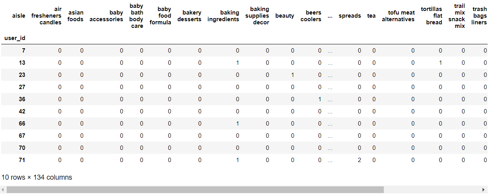

K-Means Clustering Output
After merging order_id and user_id:
-
Load the products csv file data:
-

Load the aisles csv file data:
-
Print shape of aisles:
-
Merge the aisle_id,product_id,order_id rows of products, orders and aisles:
-
Top 10 rows in the products list:
-
Length of total number of unique products list:
-
Shape of prior data:
-
Length of total number of unique aisles data list:
-
Fresh fruits and fresh vegetables are best selling top two products in the products list:
-
Perform cross tabulation or contingency tables of customer products with user_id and aisle_id:
-

Shape of customer products:
-

Perform Principal component analysis (PCA) on customer products from sklearn.decomposition import PCA:
-
Plot cluster of class 1 from matplotlib import pyplot as plt:
-
Provide random centers for each clusters:
-
Predict the one hundred fifty data points for generating clusters:
-
Plot clusters belonging to class 1, class 2,class 3 and class 4:
-
Plot sub plots of each clusters belonging to different classes :
-
Top 10 products belonging to cluster 0:
-
Top 10 products belonging to cluster 1:
-
Top 10 products belonging to cluster 2:
-
Top 10 products belonging to cluster 3:
-
Top 10 products belonging to cluster 4:
-
A first analysis of the clusters confirm the initial hypothesis that are products which are genereically bought by the majority of the customers:
- fresh fruits
- fresh vegetables
- yogurt
- packaged cheese
- milk
Ratio of purchasing orders of most frequently bought products:
-
Percentage of purchasing orders of most frequently bought products:
-